Snapshot / A10lab
A10lab 2024.5- Art Direction / Design / Movie etc
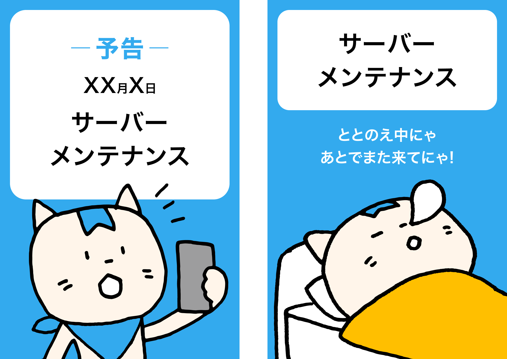
サーバーメンテナンスバナー2種
UI/UX
サーバーメンテナンス予告のバナーと、メンテナンス中のバナーの見分けがつきにくく紛らわしいと要望があったため改善した。メンテナンス中は寝てるブルーのイラストと文言でみんチャレらしい遊び心をプラス。小学生ユーザーもいるので「ととのえ中」はひらがなに。
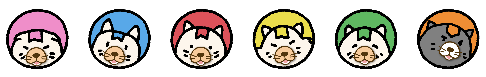
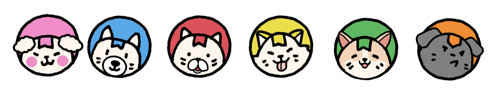
エイプリルフール企画 わんチャレ
UI/UX & Illustration
エイプリルフール何かやりたいねとエンジニアと話していて生まれたキャラクター。気合いが入りすぎて凝りに凝った結果、イラストレーターさんの著作権侵害になるのでは...となり下は没に。4/1だけ語尾が「にゃわん」になる。
10周年ファンブック 28頁
PM & Planning & UX & Design
アプリリリース10周年を記念して1年前から準備。10年間を振り返る動画を生成する機能や、ファンブック作成、プレゼントキャンペーンを企画。ファンブックにはこれまで関わった企業や有名イラストレーターさん達とのコラボレーションイラストも企画した。ファンブックはランキング頁以外は、中扉のイラストディレクションから全て担当。イラストは好評で壁紙企画にも転用したところ沢山のユーザーにDLしていただけた。
Android用splash
Motion
アプリ起動時の待ち時間に再生されるスプラッシュアニメ。iOSは思想的にスプラッシュを否定しているのでAndroidのみ実装。10周年記念にパーティーをイメージして作成。AEで作ったが実装が難しいとのことでapngに変換した。
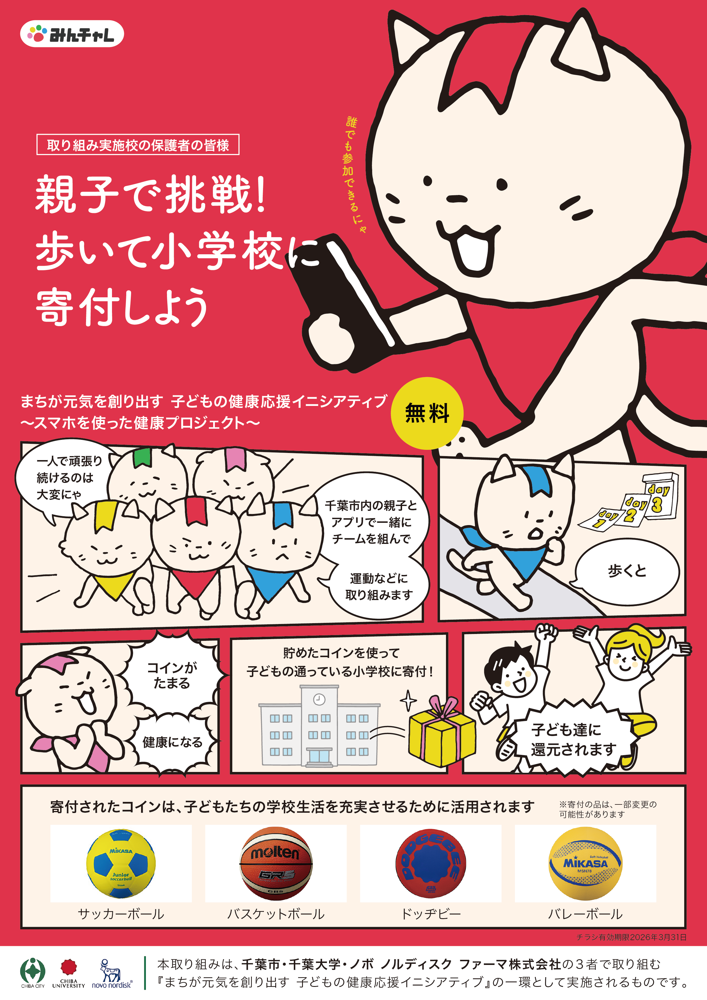
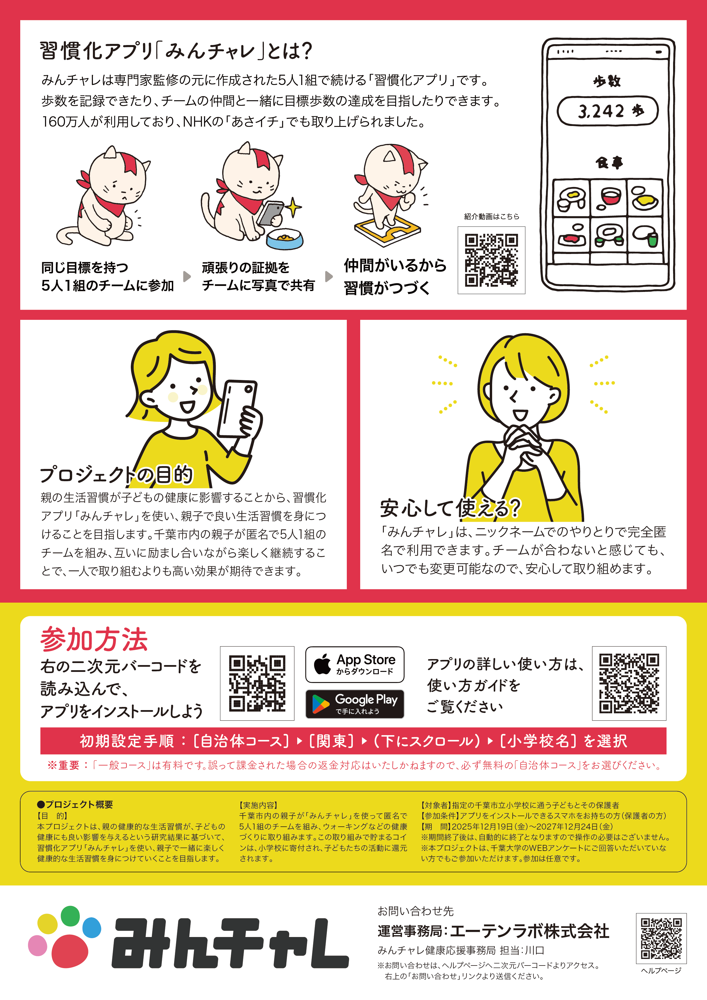
API連携(左がiOS、右がAndroid) / OS標準歩数連携機能追加 / Android ver.8対応
PM & UI/UX
千葉市・千葉大学・ノボ ノルディスク ファーマとの共同研究事業用に作成したチラシ。小学生とその親向けに漫画のコマ割りのような表現で手に取りやすさを重視した。
健康づくりのための運動習慣編
Movie / Scenario / Audio editing
千葉市・千葉大学・ノボ ノルディスク ファーマとの共同研究事業用に作成したプロモーション動画。Aftereffectで作成。Youtubeのアイコンやヘッダーなども整備した。
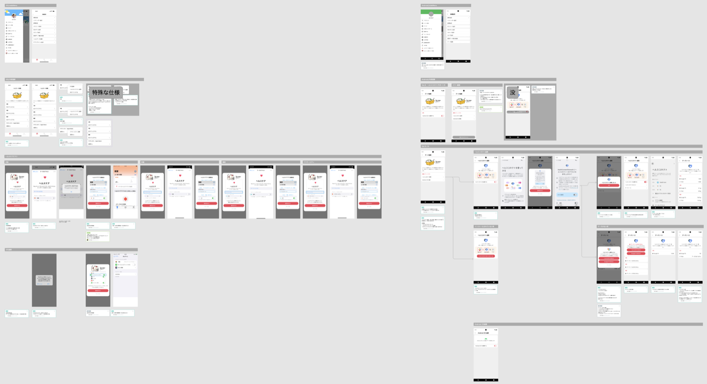
API連携(左がiOS、右がAndroid) / OS標準歩数連携機能追加 / Android ver.8対応
PM & UI/UX
歩数・体重・睡眠時間・アクティビティ・血圧のAPI連携設定。OS標準の歩数計測連携機能追加対応。Androidのver.8がサポート対象外になった時の対応。
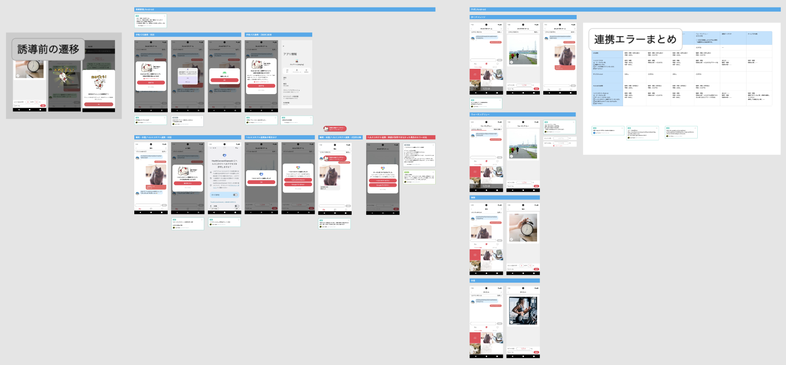
チーム内API連携誘導改善と連携エラー時の対応統一
PM & UI/UX
PHR系チームに参加した時のチーム内での連携誘導動線の改善。POPUPやモーダルが重なりすぎていたのを整理し、文言やOSによる仕様差などを調整。
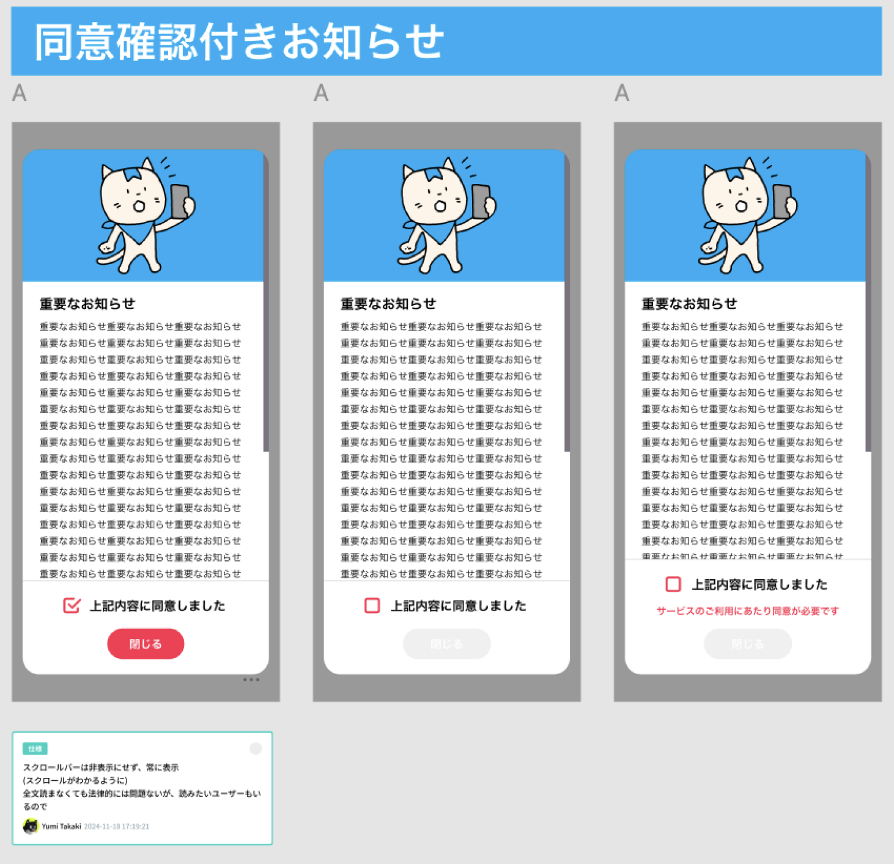
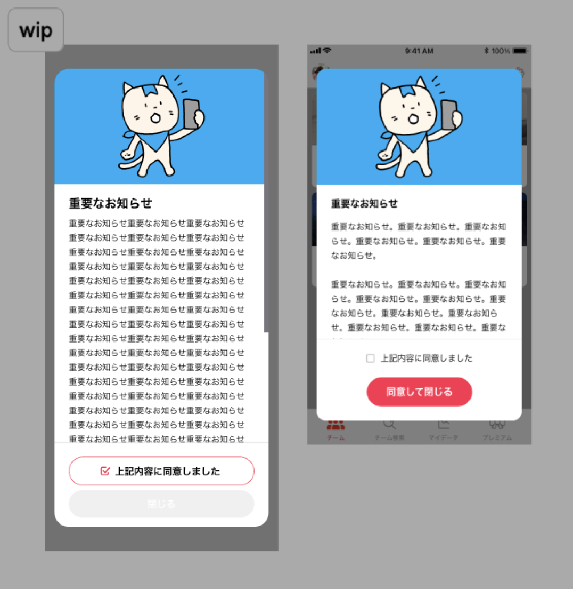
同意確認付きお知らせ
PM & UI/UX
PHR記録機能追加に伴い個人情報を扱うため同意チェック付きお知らせを作成。
同時にモーダル類の閉じるボタンのグレー色が高齢者には見にくいという要望が以前からあったため、高齢者でも困らない用に確認の文字を大きくしたり、チェックを入れないとボタンが見えないように逆にグレーは極限まで薄くするなど改善を行なった。右は没案。
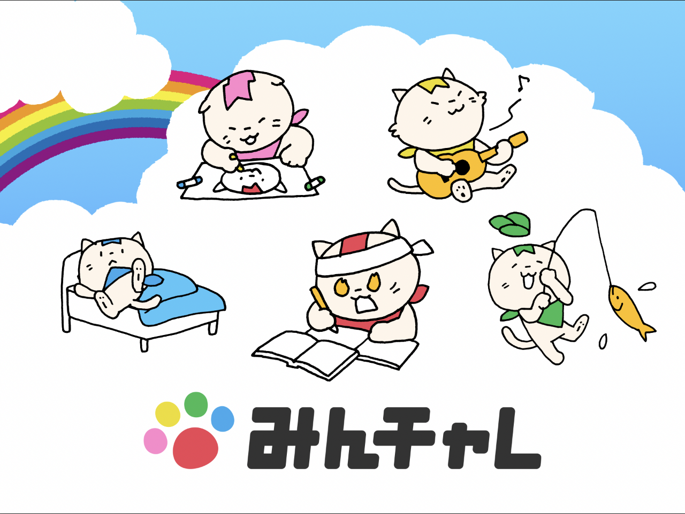
Google Play ストアバナー
他社のバナーと異なる表現で目立たせることを狙った結果、DL数の伸びが良かったらしく社長から褒められた。
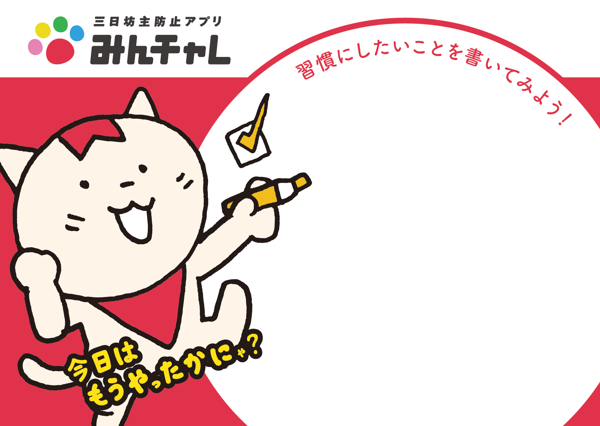
iOSDC2024 スポンサーノベルティ
みんチャレらしい習慣化が身につくようなものということで、書いて消せるミニホワイトボード。
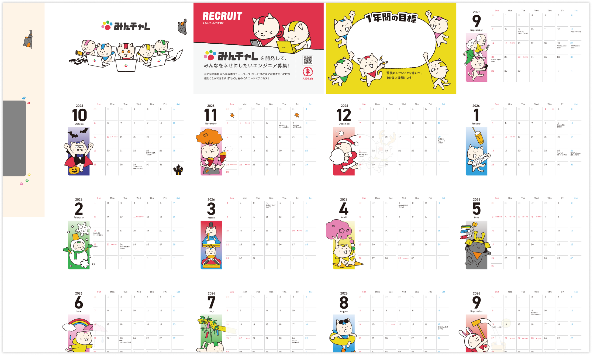
iOSDC2025 スポンサーノベルティ
イラストディレクションとデザインを担当。エンジニアにまつわる日付にXXの日と記載し、エンジニア採用に繋がる用遊び心を加えた。
A10lab 公式サイト 研究業績&採用ページ
研究業績ページは、これまでの実証研究や論文、研究会への登壇情報を時系列でわかりやすくまとめた。
採用ページは、人事からWordPressの使い方がわからなくても更新したいという要望を受けてスライドを埋め込み、差し替えれば更新できるようにした。またエンジニア採用につながるように、現場の雰囲気がわかるポッドキャストや、note、エンジニアのXへの導線を設けた。
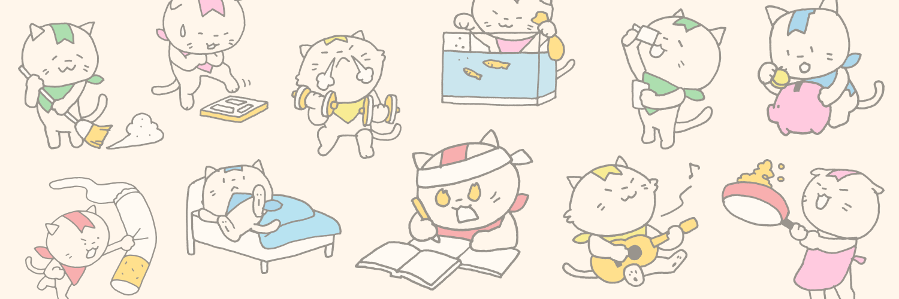
A10lab 公式X ヘッダー画像
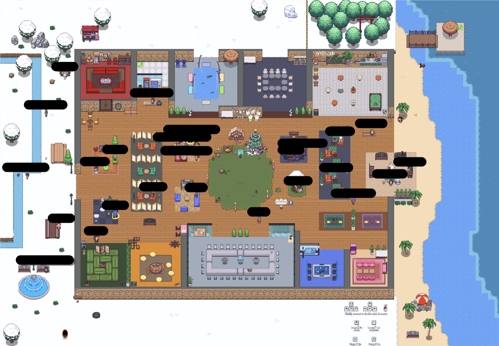
gather MAP
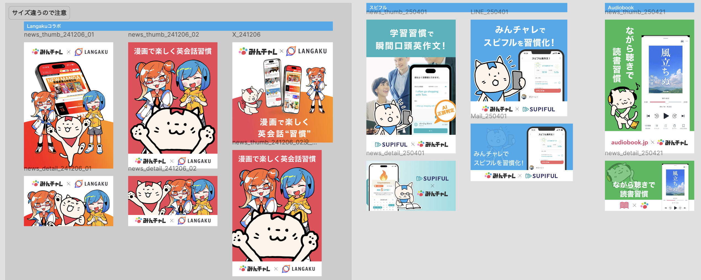
コラボバナー